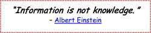

As you no doubt noticed, a large part of the above personal learning plan involves taking action. Your PLP is only the first step in your personal development. The “doing” step is what really counts. Reading, researching, and planning are great, but they will amount to nothing if you don’t act on what you’ve learned.
As noted in Section 6.4, the Internet has completely changed and continues to shape the way we learn. To effectively manage the vast amounts of information we can now access anywhere and at any time, we need a learning framework that helps us cull key concepts from multiple sources, including PLNs, and then organize and connect those key concepts. Having such a framework to filter content and, of equal importance, help us derive meaning from that content will become essential for managing information overload. One such framework is CLM.
A number of learning theories apply in particular to adult learning, including action learning, experiential learning, project-based learning, and self-directed learning. Of these, self-directed learning is at the heart of adult education because of its learner-centered focus.5
Self-directed learning is an example of the kind of informal learning discussed earlier. It is defined as the process by which individuals take responsibility for their own learning by identifying their personal learning needs, setting goals, developing personal learning plans, taking actions, and evaluating the outcomes. Section 6.6 discussed how to design your personal learning plan.
CLM was built on the foundation of self-directed learning. The discussion below outlines the five characteristics (5Cs) of CLM for lifelong learning. These are the five pillars of CLM, the most important of which is self-directed learning.
When we were in school, teachers decided what we read, what we talked about in class, and what we investigated for homework. Luckily, those days are long gone for professionals.
Once we leave the classroom, our education is no longer tied to time and location. In the workplace, we decide what, when, where, and how we learn. We set our own goals, which drive our learning. Some learn best from books, articles, or online, whereas others may find that taking courses works best. Regardless, learning is self-directed, that is, the learner makes decisions on what to learn and how to learn.
Personal inquiry is a natural way for learning to occur. By exploring, seeking information, questioning, and experimenting, we make information relevant to us, and information must be relevant to stick. Curiosity is required.
We make sense of information by making connections to prior experiences, knowledge, and other concepts. The more connections we make, the more neural pathways are created and strengthened, and the more potential there is for new information to become relevant. It’s like anything else in life: the more frequently we do something, the easier it becomes. Hence, the more connections we already have, the smoother and faster new connections will be formed, helping us learn new ideas more completely and discover new ideas more easily.
We can consume information all day long, thinking we’re educating ourselves, but unless we can make sense of that information, we haven’t learned anything.
For meaningful learning to occur, new information must be integrated with existing knowledge. Constructing meaning requires that we ask key questions as we sift through new information, extract the important concepts, combine new concepts with existing knowledge via an ever-expanding network of connections and pathways, and think about what we’re learning. We are the constructors of our knowledge.
This is perhaps the most important pillar of CLM. Once we form connections among concepts, we next fully integrate those concepts, making them our own. We can then begin applying our understanding to novel situations.
For years, education systems, by design, have turned out individuals who do exactly what they are told to do. This is never ideal, but it is particularly problematic in the workplace. If you only do exactly what your boss tells you to do or exactly what the job requires of you and nothing more, what will stop your boss from finding someone else to do your job more cheaply?6
To escape this trap, we must do our work in a way that that makes us indispensable.7 We must create new ideas. This is not easy, and many people are afraid to stand out by presenting new ideas, but it’s the only way to become irreplaceable, to make your boss appreciate your work. Of equal importance from a personal growth standpoint, it’s the only way to make work adventurous, exciting, and fun. For independent professionals, the stakes are even higher. To stay ahead of the competition and satisfy their customers, it’s imperative that they constantly learn and innovate.
We can internally mold and shape ideas forever, but if we don’t want those ideas to stagnate, we have to share them at some point. There is, of course, inherent risk in sharing. We don’t know how others will respond to our ideas. But the potential rewards are greater. By sharing an idea, we get to test it in the real world, get valuable feedback, and discover new relationships with others who are interested in similar ideas. More importantly, sharing our ideas allows those ideas to potentially help someone else.
Learning with CLM is self-directed and guided by inquiry. With CLM, we make connections, learn meaningfully, and create and share new ideas. And since CLM facilitates learning through visual mapping of key concepts, the learning is highly engaging and interactive. As we edit the maps, concepts and connections come alive and the puzzle pieces of information fit together into a larger, more complete picture. Mapping also sustains our motivation because we get constant feedback and gratification through seeing the development of our map and, hence, our learning.
We all consume lots of information every day; some of it is useful and a lot of it is not. By carefully selecting your PLN, you’ll get more relevant information. But even if you’re reading lots of high-quality material and have a great PLN, you still aren’t necessarily learning. What constitutes real learning is not so much the information itself, but rather the learner’s ability to identify relevant information and pay attention to key concepts and then reflect on, make sense of, and meaningfully transform that information into knowledge. The final step is then applying that knowledge to real-world situations. Unless we can make sense of information in a meaningful way, it’s just entertainment, not education.

Although tools such as visual maps can greatly facilitate learning, they alone, without a method to guide their application, are insufficient. CLM provides a systematic method for using visual maps to learn. With CLM (see following diagram), learning is achieved via a five-phase process (looking for puzzle pieces), with 4 repeating steps within each phase, that involves meaningfully organizing and connecting key concepts in a visual map (putting together the puzzle pieces), critical thinking, and asking key questions. Through this active, cognitive, and constructive learning process, you integrate new information with existing information, condensing and transforming it into personal and meaningful knowledge.